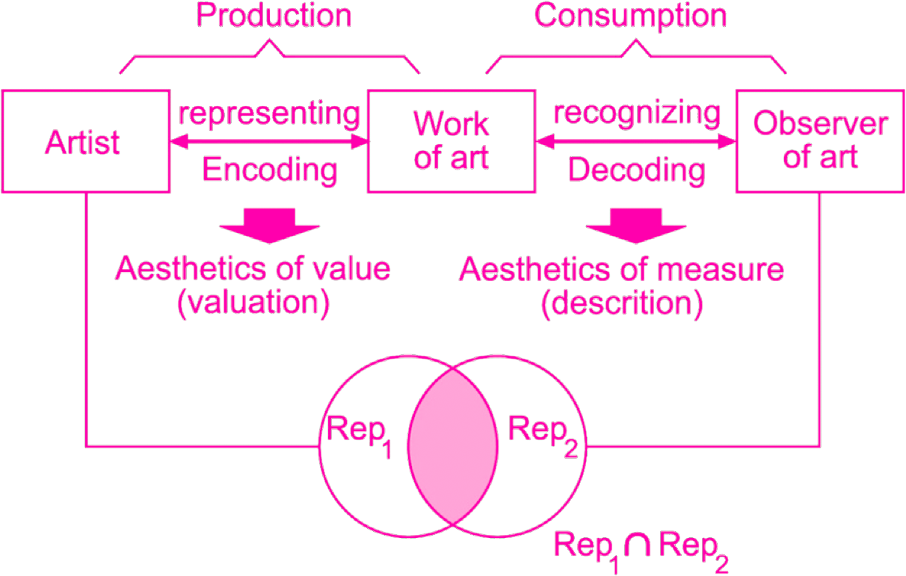

COMPENDIUM Note: The diagram presents analysis of the aesthetic experience and the basic Birkhoff's aesthetic formula. Source: Birkhoff, G.D., 1933. Aesthetic Measure. Harvard university press, Cambridge, Massachusettes.
The most well-known attempt to analyse aesthetic value through an informational lens was Max Bense and Abraham Moles’s ’informational aesthetics’. Developed in the late 1950s, this was a multidisciplinary approach that mixed George D. Birkhoff’s (1933) ‘aesthetic measure’, based on the ratio between order and complexity, Claude E. Shannon’s (1948) Mathematical Theory of Communication, Norbert Wiener’s (1985) Cybernetics and Peircean semiotics (see Klütsch, 2012). The ultimate goal of information aesthetics was to develop a method for objectively measuring aesthetic value, thus freeing aesthetic judgements from ‘subjective speculation’ (Klütsch, 2012, p. 67). Understandably, and despite Modernism’s penchant for rationality (e.g. Clement Greenberg’s (1999) comparison between medium specificity and the scientific parcelling of natural phenomena), this type of engagement with artworks was not the most popular within art scholarship, even after computational technology became fully embraced by artists and other creative practitioners. Instead, most contemporary art scholars continue to outsource their theoretical frameworks and views on computer-generated aesthetic artefacts to media studies and other recent fields such as software studies.
This paper discusses Mikhail Volkenstein’s (2009) characterisation of artworks as ‘integral informational systems’. It argues that this informational approach offers not only a rich insight to better understand how we relate and judge aesthetic artefacts, but also helps to clarify why attempts to quantify aesthetic value are very unlikely to succeed. The paper begins by introducing key aspects of information as understood by Shannon’s Mathematical Theory of Communication, as well as providing a brief description of information aesthetics’ main arguments. This is followed by a concise outline of Volkenstein’s ideas concerning artistic information and its value. The next section then introduces an alternative understanding of information, provided by the philosophy of information. The discussion begins by comparing Volkenstein’s views with information aesthetics, before showing why seeing the artwork as a system explains the failure of quantitative models to fully account for aesthetic value. Finally, the paper suggests that by being applicable to all forms of art, the informational system approach discussed above may help supersede the analogue vs digital dichotomy. This paper does not (cannot) deny that aesthetics, creativity and artistic pleasure might someday be analysed objectively; that is, it does not subscribe to any essentialist conception of art. It simply shows that trying to quantify what happens when we create art amounts to quantifying human cognitive abilities; a task which, at the very least, would, call for enormous datasets, computational power, and algorithmic design way beyond our current capabilities.
2.
As Floridi (2004) argues, using this name
interchangeably for MTC is misleading, since the latter
is a theory of information without meaning, albeit not
in the sense of being meaningless, but rather in the
sense of not yet being meaningful. Therefore, a more
suitable name would be ‘theory of data
communication’.
Since MTC was conceived to analyse any instance of information exchange in quantitative terms, the model had to ignore all the unquantifiable ‘psychological’ (Byfield, 2008) aspects involved in communication. MTC intentionally disregards the semantic value of messages and treats information as a mere placeholder – in the same manner that a gram and a millimetre serve as placeholders – that is, as a ‘raw’ (Floridi, 2004, p. 51), ‘dimension-less’ (Ben-Naim, 2008, p. 203) quantity. MTC is fundamentally a model of communication limits at the syntactic level, concerned exclusively with the transmission of information and not with information itself. This means MTC has little to say about reception (an aspect of communication which is of capital importance to, say, media theory). Moreover, MTC does not provide a method for measuring information per se but for quantifying the amount of ignorance or uncertainty erased by a message (Floridi, 2004). In other words, Shannon used the quantification of predictability and redundancy as a ‘backward way of measuring information content’ (Gleick, 2011b, p. 191).
MTC regards communication as a system that is neither deterministic nor entirely random, but stochastic, meaning that its outputs are the product of certain probabilities (Gleick, 2011a, p. 187). Two fair dice are an example of a stochastic system since it is possible to calculate the probability of getting any number between two and twelve at any given throw; with seven being always the most probable outcome, and with each throw being subject to a certain amount of randomness, or ‘entropy’, and probability. Conversely two extremely biased dice represent a deterministic system, since after a series of throws one can be fairly certain of what number will come next. Deterministic systems are virtually devoid of randomness. Whereas in a totally random system (i.e. one that stands in a maximum state of entropy) the succession of events shows no discernible pattern on which to base future predictions, for there is simply no way to calculate the likelihood of any output. For MTC, the more unexpected the contents of a message the more informative the message is and vice versa, the more expected and redundant the less informative. Thus, in theory, the higher the randomness, the higher the (potential) amount of information. In summary, for MTC information represents a decrease in uncertainty or, more precisely, a reduction in ‘data deficit’ (Floridi, 2004, p. 47) or ‘ignorance’ (Ben-Naim, 2008) about the state of a system or the contents of a message. MTC is a very effective model in contexts where semantic value is not a priority – e.g. in electronic communications and computation, but its suitability diminishes greatly in circumstances where meaning is central to the analysis, such as in aesthetic practices.
COMPENDIUM Note: George D. Birkhoff's theory of aesthetic measure and its applications to geometric forms to provide systematic means of analysis in simple formal aesthetic domains. Source: Birkhoff, G.D., 1933. Aesthetic Measure. Harvard University Press, Cambridge, Massachusettes.
The key assumption information aesthetics made – or at least that Bense made – was that creative processes generally produce order (Rigau, Feixas & Sbert, 2008) or ‘negative entropy’ out of disorder. This idea is closely connected to Boltzmann’s identification of entropy with disorder (Ben-Naim, 2007, p. 196). According to this interpretation, physical processes tend to change from initial more ordered states, towards a state of maximum entropy or ‘“mixupness”’ – as described by the polymath J. W. Gibbs (Ben-Naim, 2007, p. 198), a key figure in the development of statistical mechanics. Thus, as Bense saw it, while the physical world is inevitably poised towards chaos (i.e. to a state of maximum entropy), aesthetic creation strives towards order or ‘negentropy’ (see Klütsch, 2012). It is in the relation between chaos/complexity and order that aesthetic value lies; and for Bense this framework has the status of a natural law. The aesthetic object has special properties that go beyond its material carriage; a ‘correality’ that is determined by ‘macroaesthetic rules’ which may be interpreted and modelled through objective algorithmic processes. By surrendering subjective interpretation, Bense and Moles’s not only gave up on aesthetics as ‘a theory of sensual perception’ (Nake, 2012) but also on the notion that ‘the subject matter of aesthetics is in itself intrinsically subjective’ (Cohen et al., 2012).
Volkenstein is aware that aesthetic judgements do not happen in a vacuum, but that artworks are interpreted according to fluctuating tastes and socio-cultural norms. Reception of artistic information is both a collective and a personal matter subjected to historical and psychological changes. That is why yesterday’s mediocrity may become today’s masterpiece and vice versa. The timeless masterpiece is thus the artwork to which we ’return’ repeatedly over the course of our lives and that always seems to offer something new; true ‘genius’, as Volkenstein (2009, p. 190) argues, ‘is unlimited informativity’.
Volkenstein describes art as a process that creates order out of a primeval chaos, but also as a peculiar form of knowledge of the world. He sees entropy as directly opposed but also indispensable for the emergence of art; since it is precisely a lack of uniformity which allows the poietic ‘negative entropy’ to emerge and be noticed. Contrary to more fatalistic interpretations of entropy, Volkenstein sees this phenomenon as an imperative condition for life since without it there would be no movement, no transference, and no change.

COMPENDIUM Note: Max Bense's System of Aesthetic Communication. Informational Aesthetics-What is the relationship between Art Intelligence and Information. Source: https://www.jadm.eg.net/cgi/viewcontent.cgi?article=1003&context=journal.
6.
It is important to note, however, that physicality
does not necessarily entail materiality (see Floridi,
2010).
7.
Prior to its discovery, Egyptian hieroglyphics were
indecipherable; the discovery of the stone provided an
‘interface’ to access their meaning; this however did
not affect their original semantics (see Floridi, 2004).
8.
Consider for example a musical score or a piece of
software, neither of them may be successfully
qualified in alethic (truth or falsehood) terms.
To illustrate the relativity of complexity, we can – as Volkenstein (2009, p. 82) suggests – think of the way a biologist and a butcher regard a bull’s brain: while the former sees a complex system whose minimal detailed specification might require a few millions of bits, the latter sees but one of the couple dozen edible parts of the animal. Similarly, while the word ‘cat’ would take up some twenty-four bits, a picture of a cat might need a few thousand bits, and a (high definition) video of the same cat up to a few million bytes. It follows that, for the time being, encoding the complete specification of that particular cat – or any other organism – in a program shorter than the actual specimen (Volkenstein, 2009, p. 183) is unlikely, to say the least; otherwise, we would be living inside a Borgesian fantasy. Hence, it is safe to say that at least in the former sense every organism in our known world is irreplaceable.
This conception of irreplaceability also applies to artificial objects and, in particular, to works of art. Though it is possible to manipulate and even duplicate certain kinds of artworks, as Volkenstein (2009, p. 183) argues, it is impossible to devise a minimal program for something like Anna Karenina without affecting its overall integrity. Abridging an artwork is by definition a reduction of its informational content and, according to Volkenstein, of its aesthetic integrity and value. Complexity is a matter of structure while irreplaceability, seen in terms of informational value, has to do with added functionality (see Volkenstein, 2009, p. 184). To our photographically sensible eyes, a hyperrealistic painting may be structurally almost as complex in terms of informational size as the ‘real-life’ scene it has encoded, but in truth it contains little new information beyond the factuality of its own existence. For Volkenstein, this type of mimetic art does not say something new and unexpected about something else (its referent), but merely displays the technical skill of its maker. Under Volkenstein’s framework, it is the fact that we learn and do something else with whatever we grasp from an artwork – i.e. that we ‘create new information’ – that truly determines its artistic value. It is not orderliness and recognised formal patterns that are aesthetically pleasing, but the delight of acquiring new, unexpected, and useful knowledge about something in the world.
Volkenstein describes artworks structurally as complex integral informational systems, but functionally as programs that, upon being read, trigger the generation of information that did not previously exist within them. This metaphor allows us to imagine our relation with art in a more contemporary manner. We may describe the artwork as a ‘bootstrap loader’ that launches our ‘thesaurus’, thereby allowing us to generate ideas and connections that we could not have conceived otherwise. We may also think of an artwork not as a pre-compiled program, but more like a complex ‘script’ that may be run through a myriad of interpreters and produce an equally different number of outputs. These could include value judgements ranging from a total lack of interest to considering the artwork a true masterpiece. Nonetheless, like all metaphors, this one also has limits. Unlike computers, our interpreting abilities are not limited to performing numerical calculations and remembering their results; we humans establish complex semantic associations without even trying. As interpreters, we not always consciously ‘choose’ which information present in the artwork we pay attention to and which we ignore. Our interpretations are shaped by our mental and emotional states, by our intellectual and personal backgrounds, and by the very historical and cultural circumstances surrounding our engagement with these and other objects and agents in the world.
Like complexity itself, specified observables are always relative and dependent upon the level of analysis employed to analyse them. Being the source of information about the system, observables are chosen based on the outlook, presumptions, theoretical framework, goals and desired granularity of the observer. Thus, choosing a given observable implies making an ontological commitment – i.e. accepting its existence – which, in turn, is supported by a larger network of beliefs, knowledge, practices, intentions, and instruments (technologies) influencing the experience of the observer. This is why the same system may be analysed and described through different approaches that may or may not share the same observables or even the same definition of a particular observable – and for that matter, of the system as a whole. Hence, observables are not universally ‘objective’, some of them may be subjective or at least far more dependent on the theoretical approach than the observer would like to admit. Such is the case with the notions of complexity and ‘order’ used by Birkhoff and information aesthetics.
Order is a relational as well as a multifactorial phenomenon; it does not (cannot) exist in isolation nor it is a universal value. Patterns, on the contrary, are far more common, pervasive and easier to formalise. As noted earlier, information aesthetics sees art as something that creates order or ‘negative entropy’ and, by the same token, sees entropy, and randomness as equivalent to disorder. Bense’s understanding of the second law of thermodynamics aligns with nineteenth century interpretations of entropy as a force ushering the world towards a state of chaos, uncertainty and dissipation of energy. Along with being pessimistic and subjective, this interpretation is outright misleading. A far more useful way to regard entropy is simply as the tendency of systems to assume their most probable configuration (see Ben-Naim, 2007); whether such state corresponds to ‘disorder’ is a qualitative but not quantitative judgement. This interpretation elucidates why maximum randomness implies maximum informativeness (the absence of a clear-cut pattern allows many other patterns to emerge and for more information to be chosen), and shows why art is not antithetical to entropy. Just as life could not exist without motion (Volkenstein, 2009, p. 169) – without the transference of energy, chemicals, etc. – patterns cannot exist without chaos and randomness. In short, entropy and ‘negative entropy’ (i.e., patterns, structures, art) are opposite but complementary phenomena.
Aesthetic objects are never engaged in vacuo, they are, to put it in Volkenstein’s terms, always judged against a more or less apt ‘thesaurus’. Art is the product of a socio-cultural ‘judgement’ (Nake, 2012, p. 74), artworks have no magical intrinsic qualities, they are objects that display and convey an intentional pattern that generates information. Genres, styles, movements, formal qualities, they are all epistemological constructs deeply entrenched in culture. Art is relational; it arises from the interaction between the object-pattern, the audience, and the context. The value of an artwork depends as much on the way it is in-formed by its creator as on the way it is interpreted and judged by the audience. Without risking exaggeration, this relational process involves a myriad of variables, from perceived technical prowess of the artist to the viewer’s own knowledge and mental state.
It follows that a true measure of aesthetic value should not only account for all the structural elements present in any given artwork and for their mutual interactions, but also for all the potential contexts and thesauruses involved in its interpretation. This of course presumes that somebody has found a way to break down an artwork into objective minimal units and also figured out the rules governing how they are structured and interpreted by a human being. Given the intricacy of both tasks, it is safe to say that attempting to objectively quantify every single one of these variables remains an unfeasible task.
Volkenstein shows us that the artwork is ‘telling’ us something we did not know, conveying factual information, describing something, a certain view of the world; in so doing something changes, something gets triggered in another system: the viewer’s mind. The work of art as a system is open and in flux. Information begets information, it is something alive, a pattern that is to be constructed. The rarity, the unexpectedness of the potential information generated is what begets value. The artwork is a pretext in the amplest sense of the word; a program with uncertain and unlimited outputs. Birkhoff and the creators of informational aesthetics understood beauty and aesthetic value as something inherent and immutable within the object, while Volkenstein shifts the value to intuition, to the knowledge that falls outside logical proof. For Birkhoff and for informational aesthetics, artistic value is to be discovered and explained, for Volkenstein, it is to be constructed and reimagined. The uniqueness of an artwork is the unquantifiable result of an interaction between minds and of every potential interpretation that can come out of that type of engagement. Volkenstein’s two key points: that (a) artworks may be regarded as complex systems, and (b) artistic value has to do with novelty and irreplaceability but, most of all, with (unlimited) informativeness, represents a valuable contribution to art scholarship. Volkenstein’s model does not enter into contradiction with other interpretations of aesthetic value but complements them; it does not force us to see or to understand artworks just as information, but to see them as different configurations, as types of encoding. Unlimited informativeness is unlimited interpretability, which in turn depends on the individual and its context. Each time we run the artwork-program through an interpreter we obtain a new iteration of a program, which in turn may lead to other programs and variations.
What has been offered in this paper is not an outright negation of the possibility of artworks being analysed through quantitative means, but simply an explanation of why it is so difficult to do so. Like all complex problems, recognising the obstacles goes a long way towards finding apt solutions – however modest – and, in the process, learning more about our methodologies. Seeing artworks through an informational perspective can bridge the gap with computational interpretations, which in turn may also work as metaphors that could promote crossfertilisation between programming and art. Finally, we have seen the concept of information is by no means limited to Shannon’s quantitative characterisation, but instead represents a powerful hermeneutical device even in the context of the humanities and the arts. Moreover, it is now clear that an informational characterisation of artworks does not necessarily reduce aesthetic experience to a mindless computational process. Quite the contrary, this type of approach helps to elucidate precisely why art is intrinsically open, mutable and rich.
Ben-Naim, A. (2007). Entropy demystified: The second law reduced to plain common sense. Singapore: World Scientific.
Ben-Naim, A. (2008). A farewell to entropy: Statistical thermodynamics based on information. Singapore: World Scientific.
Birkhoff, G. D. (1933). Aesthetic measure. Cambridge, Massachusetts: Harvard University Press.
Byfield, T. (2008). Information. In M. Fuller (Ed.), Software studies: A lexicon (pp. 125–132). Cambridge, Massachusetts: The MIT Press.
Cohen, H., Nake, F., Brown, D. C., Brown, P., Galanter, P., McCormack, J., & d’Inverno, M. (2012). Evaluation of creative aesthetics. In J. McCormack & M. d’Inverno (Eds.), Computers and creativity (pp. 95– 111). Berlin; New York: Springer. http://doi.org/10.1007/978-3-642-31727-9_4
Dusek, V. (2006). Philosophy of technology: An introduction. Massachusetts; Oxford: Blackwell Publishing.
Floridi, L. (2004). Information. In L. Floridi (Ed.), The Blackwell guide to the philosophy of computing and information (Vol. 14, pp. 40–61). Oxford: Blackwell Publishing.
Floridi, L. (2010). Information a very short introduction. Oxford; New York: Oxford University Press.
Floridi, L. (2011a). A defence of constructionism: Philosophy as conceptual engineering. Metaphilosophy, 42(3), 282–304. http://doi.org/10.1111/j.1467-9973.2011.01693.x
Floridi, L. (2011b). The philosophy of information. England: Oxford University Press.
Floridi, L. (2016). Semantic conceptions of information. In E. N. Zalta (Ed.), The stanford encyclopedia of philosophy (Spring 2016). Retrieved from http://plato.stanford.edu/archives/spr2016/entries/info rmation-semantic/
Gleick, J. (2011a). Genius: The life and science of Richard Feynman. New York: Open Road Media.
Gleick, J. (2011b). The information: A history, a theory, a flood. New York: Pantheon Books.
Greenberg, C. (1999). Towards a newer Laocoon: An anthology of changing ideas. In C. Harrison & P. Wood (Eds.), Art in theory 1900–1990 (12th reprint, pp. 554–560). Blackwell Publishing.
Klütsch, C. (2012). Information aesthetics and the Stuttgart school. In H. B. Higgins & D. Kahn (Eds.), Mainframe experimentalism: Early computing and the foundations of the digital arts (pp. 65–89). Berkeley: University of California Press.
Mainzer, K. (2004). System: An introduction to systems science. In L. Floridi (Ed.), The Blackwell guide to the philosophy of computing and information (pp. 28–39). Oxford: Blackwell Publishing.
Mignonneau, L., & Sommerer, C. (2006). From the poesy of programming to research as art form. In P. A. Fishwick (Ed.), Aesthetic computing (pp. 169–183). Cambridge, Massachusetts: The MIT Press.
Nake, F. (2012). Construction and intuition: Creativity in early computer art. In J. McCormack & M. d’Inverno (Eds.), Computers and creativity (pp. 61–94). Berlin; New York: Springer. http://doi.org/10.1007/978-3- 642-31727-9_3
Rigau, J., Feixas, M., & Sbert, M. (2008). Informational aesthetics measures. IEEE Computer Graphics and Applications, 28(2), 24–34. http://doi.org/10.1109/MCG.2008.34
Shannon, C. E. (1948). A mathematical theory of communication. The Bell System Technical Journal, 27, 379–423, 623–656. Reprinted with corrections.
Shannon, C. E., & Weaver, W. (1980). The mathematical theory of communication (8th ed.). Chicago: University of Illinois Press.
Taleb, N. N. (2012). Antifragile: Things that gain from disorder. New York: Random House.
Volkenstein, M. V. (2009). Entropy and information. (A. B. de Monvel & G. Kaiser, Eds., A. Shenitzer & R. G. Burns, Trans.). Berlin: Birkhäuser.
Weaver, W. (1949). The mathematics of communication. Scientific American, 181(1), 11–15.
Wiener, N. (1985). Cybernetics: Or control and communication in the animal and the machine (2d ed.). Cambridge, Massachusetts: The MIT Press.
Rodrigo Hernández-Ramírez
Faculty of Fine Arts,
University of Lisbon,
Portugal
rodrigo.hr@protonmail.ch